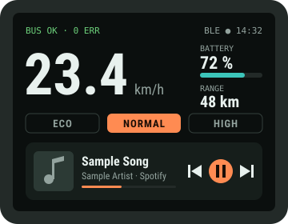
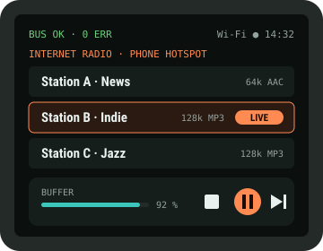
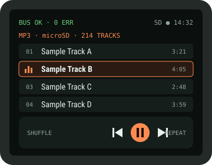

Ride Audio Add-on
Music on your handlebar unit, in two ways. The touchscreen can act as a remote for Spotify playing on your phone. Or the ESP32-S3 can play music itself through its own speaker: Spotify Connect, internet radio, and MP3 files from a microSD card.




Screen designs for a 320 × 240 touchscreen, with sample values and made-up track names.
01What's possible
| Feature | Status | How |
|---|---|---|
| Control Spotify on your phone (play/pause, skip, volume) | Yes | Option 1A: the S3 acts as a Bluetooth LE media remote. Works with iPhone and Android. |
| Show the song title and artist | Yes | iPhone: Apple Media Service over Bluetooth LE (1A). Any phone: Spotify Web API over Wi-Fi (1B). |
| Album art | Yes, 1B | The Spotify Web API gives a 64 × 64 px cover image link. |
| The S3 plays Spotify itself | Unofficial | Option 2: cspot, an open-source Spotify Connect client. Needs Premium, and can break when Spotify changes things. |
| Internet radio | Yes | Option 2: an HTTP stream decoded on the S3 and played through an I2S amp and speaker. |
| MP3 files | Yes | Option 2: files on a microSD card, no internet needed. |
| Act as a Bluetooth speaker or send audio to earbuds | No | That needs Bluetooth Classic (A2DP). The ESP32-S3 only has Bluetooth LE. |
| YouTube or video | No | The S3 can't decode modern video, YouTube only plays in its own apps, and a video on the handlebar is a crash risk. |
02Option 1: touchscreen as a Spotify remote
1A · Bluetooth LE media remote (no internet)
The S3 tells your phone it's a Bluetooth keyboard with media keys, called a HID consumer control device. Pressing ▶ on the touchscreen sends the same "play/pause" key a keyboard would. Spotify, or whatever app is playing, responds. You pair it once in the phone's Bluetooth settings.
On iPhone, the same connection can also read Apple Media Service (AMS), which gives the song title, artist, album, duration and play state, plus direct play/skip commands. Android has no standard equivalent: you get the controls, and song info needs option 1B.
| Button | HID consumer usage | AMS remote command (iPhone) |
|---|---|---|
| Play / pause | 0x00CD | 2 TogglePlayPause |
| Next track | 0x00B5 | 3 NextTrack |
| Previous track | 0x00B6 | 4 PreviousTrack |
| Volume up | 0x00E9 | 5 VolumeUp |
| Volume down | 0x00EA | 6 VolumeDown |
Start from ESP-IDF's esp_hid_device example in BLE mode, which already includes a consumer-control report. This is the report and how to "press" a key:
// HID report map: Consumer Control, one 16-bit usage, report ID 3
static const uint8_t media_report_map[] = {
0x05, 0x0C, // Usage Page (Consumer)
0x09, 0x01, // Usage (Consumer Control)
0xA1, 0x01, // Collection (Application)
0x85, 0x03, // Report ID (3)
0x15, 0x00, // Logical Minimum (0)
0x26, 0xFF, 0x03, // Logical Maximum (1023)
0x19, 0x00, // Usage Minimum (0)
0x2A, 0xFF, 0x03, // Usage Maximum (1023)
0x75, 0x10, // Report Size (16)
0x95, 0x01, // Report Count (1)
0x81, 0x00, // Input (Data, Array)
0xC0 // End Collection
};
#define MEDIA_PLAY_PAUSE 0x00CD
#define MEDIA_NEXT 0x00B5
#define MEDIA_PREV 0x00B6
#define MEDIA_VOL_UP 0x00E9
#define MEDIA_VOL_DOWN 0x00EA
// Press and release one media key (hid_dev comes from esp_hidd_dev_init)
static void media_key(esp_hidd_dev_t *hid_dev, uint16_t usage)
{
uint8_t down[2] = { usage & 0xFF, usage >> 8 };
uint8_t up[2] = { 0, 0 };
esp_hidd_dev_input_set(hid_dev, 0, 3, down, sizeof(down));
vTaskDelay(pdMS_TO_TICKS(30));
esp_hidd_dev_input_set(hid_dev, 0, 3, up, sizeof(up));
}| AMS (iPhone) | UUID | Use |
|---|---|---|
| Service | 89D3502B-0F36-433A-8EF4-C502AD55F8DC | Found on the iPhone after pairing (the S3 acts as GATT client) |
| Remote Command | 9B3C81D8-57B1-4A8A-B8DF-0E56F7CA51C2 | Write a command ID from the table above |
| Entity Update | 2F7CABCE-808D-411F-9A0C-BB92BA96C102 | Subscribe to Track: Artist (0), Album (1), Title (2), Duration (3); and Player: PlaybackInfo (1) |
| Entity Attribute | C6B2F38C-23AB-46D8-A6AB-A3A870BBD5D7 | Read the full text when an update is cut short |
AMS only works over an encrypted, bonded connection. Pair once from the iPhone's Bluetooth settings, and the S3 reconnects automatically after that. The touchscreen can show the 6-digit passkey during pairing.
1B · Spotify Web API over Wi-Fi (any phone)
The S3 joins your phone's hotspot and talks to Spotify's servers directly. It sees what's playing on your account, including the album art, and can control playback on whichever device is playing. This works with Android and iPhone alike. Controlling playback needs Spotify Premium.
- Create an app at
developer.spotify.com(free) and note its client ID. - On your laptop, sign in once with the scopes
user-read-playback-state,user-read-currently-playinganduser-modify-playback-stateto get a refresh token. - Store the refresh token in the S3's flash memory (NVS). The S3 swaps it for short-lived access tokens at
https://accounts.spotify.com/api/token. - While the music screen is showing, poll what's playing every 3 seconds. Stop polling when the screen is off, to save data and battery.
| Action | Request |
|---|---|
| Now playing (title, artist, progress, cover) | GET /v1/me/player/currently-playing |
| Play / pause | PUT /v1/me/player/play · PUT /v1/me/player/pause |
| Next / previous | POST /v1/me/player/next · POST /v1/me/player/previous |
| Volume | PUT /v1/me/player/volume?volume_percent=60 (some phones don't allow remote volume) |
// Skip to the next track through the Spotify Web API (ESP-IDF)
#include "esp_http_client.h"
#include "esp_crt_bundle.h"
static esp_err_t spotify_next(const char *access_token)
{
char auth[512];
snprintf(auth, sizeof(auth), "Bearer %s", access_token);
esp_http_client_config_t cfg = {
.url = "https://api.spotify.com/v1/me/player/next",
.method = HTTP_METHOD_POST,
.crt_bundle_attach = esp_crt_bundle_attach, // trusted root certificates
};
esp_http_client_handle_t c = esp_http_client_init(&cfg);
esp_http_client_set_header(c, "Authorization", auth);
esp_http_client_set_post_field(c, "", 0); // empty body, Content-Length: 0
esp_err_t err = esp_http_client_perform(c);
int status = esp_http_client_get_status_code(c); // 204 = done, 401 = refresh the token
esp_http_client_cleanup(c);
return (err == ESP_OK && status == 204) ? ESP_OK : ESP_FAIL;
}03Option 2: the S3 plays music itself
The S3 fetches or reads compressed audio, decodes it to plain audio samples, and sends them over I2S, a three-wire digital audio link, to a MAX98357A. That's a tiny amplifier board that turns I2S straight into speaker power, with no separate DAC needed.
You'll need a bigger board. The XIAO has no pins left after the screen and the tap, and audio needs 4 more pins for the amp plus 3 for microSD. Use an ESP32-S3-DevKitC-1-N16R8. It has plenty of pins and 8 MB of PSRAM, which the Spotify client and stream buffers need.
| DevKitC pin | Connects to |
|---|---|
| GPIO4 | E-TUBE tap comparator (unchanged) |
| GPIO12 / 11 / 13 / 10 / 9 / 14 / 21 | LCD SCK / MOSI / MISO / CS / DC / RST / backlight |
| GPIO8 / 18 / 17 | Touch SDA / SCL / INT (the MCP23008 button add-on shares this I²C bus) |
| GPIO5 / 6 / 7 / 15 | MAX98357A BCLK / LRC / DIN / SD |
| GPIO39 / 40 / 41 | microSD CLK / CMD / D0 |
| Don't use | 0, 3, 45, 46 (boot pins) · 19, 20 (USB) · 26–37 (flash + PSRAM on N16R8) · 38, 48 (RGB LED, depending on board revision) |
Three sources, one pipeline
Internet radio and MP3
Espressif's ESP-ADF (Audio Development Framework) builds on ESP-IDF and has ready-made pieces for each block: an HTTP reader, a microSD reader, MP3/AAC decoders and an I2S writer. Use an ADF release that supports your ESP-IDF version. This is based on ADF's pipeline_http_mp3 example:
// Internet radio: HTTP stream -> MP3 decoder -> I2S (ESP-ADF)
audio_pipeline_cfg_t pipe_cfg = DEFAULT_AUDIO_PIPELINE_CONFIG();
audio_pipeline_handle_t pipeline = audio_pipeline_init(&pipe_cfg);
http_stream_cfg_t http_cfg = HTTP_STREAM_CFG_DEFAULT();
audio_element_handle_t http_reader = http_stream_init(&http_cfg);
mp3_decoder_cfg_t mp3_cfg = DEFAULT_MP3_DECODER_CONFIG();
audio_element_handle_t mp3 = mp3_decoder_init(&mp3_cfg);
i2s_stream_cfg_t i2s_cfg = I2S_STREAM_CFG_DEFAULT(); // set BCLK=5, WS=6, DOUT=7 in your board config
i2s_cfg.type = AUDIO_STREAM_WRITER;
audio_element_handle_t i2s_writer = i2s_stream_init(&i2s_cfg);
audio_pipeline_register(pipeline, http_reader, "http");
audio_pipeline_register(pipeline, mp3, "mp3");
audio_pipeline_register(pipeline, i2s_writer, "i2s");
const char *order[] = { "http", "mp3", "i2s" };
audio_pipeline_link(pipeline, order, 3);
audio_element_set_uri(http_reader, station_url); // from your saved station list
gpio_set_level(GPIO_NUM_15, 1); // amp on
audio_pipeline_run(pipeline);
// MP3 from microSD: register fatfs_stream (reader) instead of http_stream and set
// the URI to a file such as "/sdcard/music/track01.mp3".Finding stations: the free radio-browser.info directory lists stream URLs by country (for example /json/stations/bycountrycodeexact/AU). Pick your favourites on your laptop and save them to a stations.json on the microSD card, so the S3 doesn't need to search while you ride. Stream URLs change, so prefer the directory's current links over copying old ones.
Data use: a 128 kbit/s stream uses about 58 MB per hour of your phone plan. 64 kbit/s AAC streams sound fine through a small speaker and use half that.
Spotify on the S3 (cspot)
cspot is an open-source Spotify Connect client for the ESP32 (github.com/feelfreelinux/cspot). Once it's running, the head unit shows up in the Spotify app's device list like any smart speaker. You choose music on your phone, and the S3 streams it straight from Spotify, so the phone's battery and Bluetooth aren't involved.
cspot needs Spotify Premium and PSRAM. It isn't made or approved by Spotify. Spotify has changed its protocols before, which can break unofficial clients until they're updated. Check the project's recent activity and open issues before you build around it. Radio and MP3 don't have this risk.
Power and the case
Peaks are higher on loud bass notes. The amp can briefly pull 600 mA at 5 V.
Estimate. Measure yours with a USB power meter.
Keep the bike's bus for the tap only. Audio peaks could pull the bus voltage down and upset the motor or display.
For the case, the head unit needs about 10 mm more depth, a 40 mm speaker opening with waterproof acoustic mesh, a microSD slot with a rubber cover, and room for the battery. These can become parameters in hardware/case/etube_case.scad.
04Parts (AUD)
| Part | For | Qty | ≈ A$ |
|---|---|---|---|
| Nothing extra: firmware only | Option 1A / 1B | — | 0 |
| ESP32-S3-DevKitC-1-N16R8 (replaces the XIAO) | Option 2 | 1 | 25–35 |
| MAX98357A I2S amplifier board | Option 2 | 1 | 8–12 |
| 40 mm 4 Ω 3 W speaker, IP67 or with a waterproof cone | Option 2 | 1 | 10–20 |
| Acoustic mesh / speaker grille fabric | Option 2 | 1 | 5 |
| microSD breakout board + 16–32 GB card | MP3 | 1 | 15–20 |
| 1S Li-ion/LiPo 2000 mAh with protection board | Option 2 | 1 | 15–25 |
| Charge + 5 V boost module (USB-C input) | Option 2 | 1 | 8–15 |
| 10 kΩ resistors ×2, power switch, wire | Option 2 | — | 5 |
| Option 2 subtotal | ≈ 91–137 | ||
Core Electronics, Jaycar and Altronics stock all of these. Spotify Premium is needed for 1B control and for cspot.
05Build order
- Media keys first (1A). Flash the
esp_hid_deviceexample in BLE mode with the consumer report, pair your phone, and check that play/pause and skip control Spotify. No new hardware needed. - Now playing. iPhone: add the AMS client and show the title and artist. Any phone: set up the Spotify app and refresh token for 1B.
- Screens. Build the four LVGL screens from the designs above. A swipe switches between Ride, Now playing, Radio and MP3, and the mini player stays on the Ride screen.
- Audio hardware on the bench. Wire the MAX98357A and speaker to the DevKitC, powered from USB, and play a test tone over I2S.
- MP3 from microSD. Add the card and play a file. This proves the decoder and amp with no network involved.
- Internet radio. Join your phone hotspot, load
stations.json, and play a stream. Watch the buffer bar on a weak signal. - Spotify Connect (optional). Add cspot and check that the unit shows up in Spotify's device list.
- Battery and case. Move to the Li-ion pack, measure the real draw and battery life, then update the case for the speaker and battery.
Keep the volume low enough to hear traffic, cars behind you and other riders. Check your state's road rules on audio devices while cycling. The Ride screen stays the default: music screens open only when you choose them, and return to Ride after 10 seconds without a touch while moving.
06References
- Apple Media Service (AMS) specification, Apple Developer documentation.
- USB HID Usage Tables, Consumer page (0x0C): usages 0xCD, 0xB5, 0xB6, 0xE9, 0xEA.
- Spotify Web API reference, Player endpoints:
developer.spotify.com/documentation/web-api. - ESP-IDF
esp_hid_deviceexample (BLE HID device) and theesp_http_clientdocumentation. - ESP-ADF
pipeline_http_mp3example:github.com/espressif/esp-adf. - cspot, Spotify Connect for ESP32:
github.com/feelfreelinux/cspot. - radio-browser.info, a free community internet radio directory.